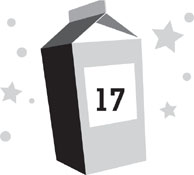

Lunar day 217
Afternoon
We refilled our oxygen tanks, suited up, and headed back to MBA. The rover Kira and I had wrecked was out of commission, so there was only one left—and it could only hold four people. Chang ordered Mom and Dad to drive Kira and me back in it, while he and Dr. Howard would walk. Dad protested, but Chang pulled rank as the interim base commander, and that was that.
The trip back to MBA was far less eventful than the trip out had been. But even so, it was still terrifying.
I spent the entire time worrying that a meteorite was suddenly going to plunge from the sky and kill me. Or kill one of the people I was with. I did my best to remain calm, but I wasn’t fooling anybody. They could all hear me over the intercom in our helmets. I’d never realized you could tell that someone was frightened simply by their breathing, but you can.
I could hear it in Kira’s sharp, ragged breaths. And I could see her nervous fidgeting. Despite all her claims that she was fine, she was just as scared as me.
So rather than make us walk from the garage to the air lock, Dad lopped a few precious minutes off the trip and dropped us off at the front of the base with Mom. Then he drove on to the garage while we all stepped into the air lock.
The other big rover was still parked by the air lock. Dr. Balnikov, Dr. Merritt, Dr. Kim, and Dr. Alvarez had been in a much bigger rush when they’d returned, fearing that their helmets might fail, so they hadn’t spent a second longer outside than they needed to. The rover had been hit by a few meteorites and looked badly damaged, which made me think about what would have happened if I had been hit by a meteorite like that. I hurried into the air lock as quickly as I could. So did Kira and Mom.
The moment I stepped inside, where I was safe from incoming space rocks, I was finally able to relax. Less than two hours before, I hadn’t been a very big fan of MBA. Now I couldn’t have been happier to be back there.
The air-lock chamber repressurized and we eagerly popped off our helmets.
Through the glass of the inner air lock, we could see Violet and Daphne waiting for us. Violet had her nose mashed up against the window and was making funny faces. She also had a chocolate mustache.
“Welcome back, everyone!” she yelled.
“Thanks, sweetheart,” Mom called back. “Looks like you had ice cream anyhow.”
“No, I didn’t!” Violet lied.
Daphne blushed, embarrassed. “I couldn’t say no to her. She’s too darn cute.”
It took a long time to get all the moon dust off our suits, especially mine and Kira’s. The air hose system wasn’t very fast to begin with, and we were coated with the stuff. By the time Dad bounded up to the outer air lock door from the garage, we’d only managed to get the helmets clean.
“Let’s leave the suits for now,” Mom said. “Stephen needs to come in and we have other things to do.”
So we passed into the staging area with our helmets, leaving the suits heaped on the floor, and then closed the inner air-lock door behind us. Now that the air-lock chamber was clear, Dad entered it from the lunar surface.
Once I was inside the base, Violet threw her arms around me and clamped on tight. “I’m so happy you’re okay!”
“Thanks,” I said.
“I hate those meteoroids,” she told me, then turned to the window and yelled, “Stupid meteoroids! You stay away from my brother!”
“I’m happy you’re okay too,” Daphne said, then hugged both Kira and me at once.
“Oof!” Violet cried from in between us all. “Help! I’m being squished!”
Almost everyone else at MBA had turned out to witness our arrival as well. Now that their raid on the greenhouse was over, the Sjobergs had retreated back into their room again. But all the other Moonies were gathered to welcome us back—except Dr. Goldstein. I figured she was in the greenhouse, assessing the damage the Sjobergs had done.
Roddy stepped forward first. “Hey, guys, I’m glad you made it.”
Everyone then looked to Cesar expectantly. He stayed right where he was, though, looking down at his feet, until his mother shoved him forward. “Cesar has something he’d like to say,” she announced.
“Yeah.” Cesar kept his gaze locked downward. “I’m sorry the Sjobergs and I broke the helmets and caused all this trouble.”
“That’s all right,” Mom told him, though her tone indicated she was still plenty peeved at Cesar.
“How’d you finally get the helmet off?” I asked him.
“We had to use some industrial lubricant designed for the robots,” Daphne explained.
“What was it like out there?” Roddy asked eagerly. “With all the meteorites coming down around you? Was it exciting?”
“Too exciting,” I told him.
“Any sign of Nina back here?” Mom asked.
A collective sense of sadness and unease seemed to settle over everyone else.
“Nothing,” Daphne admitted. “The search parties didn’t find any sign of her and we haven’t heard a peep since everyone came back inside.”
“And you searched everywhere we planned to?” Mom asked.
“No,” Dr. Balnikov admitted. “We called off the search outside when the issue of the helmets became evident, and then the meteorite shower prevented us from resuming it.”
“However,” Dr. Alvarez added, “we did cover a significant area and saw no sign of her.”
“I got some robots going after the shower ended,” Daphne reported. “They’ve all come up empty, but they haven’t had time to range very far.”
“I checked the whole base for her!” Violet said helpfully. “Even the bathrooms. But I couldn’t find her.”
Mom looked to me. “Any other ideas where she might be?”
It caught me by surprise that she was deferring to me on this. Then I noticed that everyone else was looking at me expectantly too. “No,” I said sadly.
“Nothing?” Mom pressed.
“Come on, Dash,” Violet said. “You figured out what happened to Dr. Holtz when no one else could.”
A murmur of agreement rippled through the room.
Unfortunately, I couldn’t come up with anything. Whether Nina had vanished on her own or someone had attacked her and then tried to hide her body, she’d still have to be somewhere. But I had no new ideas about where that could be.
Before I was forced to admit this, however, Dad stepped through the air lock and announced, “That wasn’t a meteorite shower.”
Everyone’s attention now shifted to Dad.
“It was so a meteorite shower,” Kira told him. “I was out in it.”
“You were out in a shower,” Dad corrected. “But those weren’t meteorites.” He held up a scrap of metal the size of a pea. “They were things like this.”
Mom took the bit of metal and stared at it, aghast. “You mean that whole shower was man-made?”
“Probably not on purpose,” Dad said. “But yes, it was. I checked out a few of the other impact craters by the garage. They were all made by space junk.”
I groaned. Space junk was an increasingly dangerous problem. Garbage on earth was merely ugly, but in orbit—where everything moved at seventeen thousand miles an hour—it was deadly. If a spacecraft hit something as tiny as a wing nut at that speed, it could explode and everyone on board would die. And unfortunately, if there was one thing humans excelled at, it was creating garbage. Almost every time we launched something into space, we left debris out there, ranging from little stuff like nuts and bolts that broke off rockets, to big stuff like defunct satellites. Even worse, space junk tended to multiply. If even a tiny piece slammed into a satellite, that satellite instantly became several million more pieces of space junk—each of which could destroy another satellite, creating millions of more pieces. NASA did its best to monitor and remove what it could, but it was a losing battle. Rocket launches were routinely delayed to allow clouds of space junk to pass.
However, until that moment, I had thought that space junk was a much bigger problem closer to earth than to the moon—and judging from everyone else’s reactions, they were equally surprised. “Where’d it come from?” I asked.
Dad said, “Most likely, some other country had a lunar satellite blow up and neglected to inform us.”
“Don’t rule out the USA,” Dr. Balnikov retorted. “They have more spy satellites than anyone, and I guarantee you, the CIA doesn’t announce when those come apart.”
“Who says it had to be a human satellite?” Roddy asked. “There are probably dozens of alien cultures monitoring us. Maybe one of their ships malfunctioned.”
“Maybe your brain malfunctioned,” Cesar said, smacking Roddy on the back of the head.
“It doesn’t matter whose satellite it was,” Mom said angrily. “What matters is that Dash and Kira could have died because of it! If there is space junk in lunar orbit, NASA needs to know about it immediately!”
There were murmurs of agreement throughout the room. “I’ll notify them right now,” Daphne said. “Since we know the exact time the storm hit, we ought to be able to pinpoint the cloud’s location.” She spun on her heel and raced toward the control room.
As she did, she almost plowed into Dr. Kim, who had just exited the science pod, carrying a small rock. Up to that point, I hadn’t noticed that Dr. Kim wasn’t among the crowd in the staging area. Dr. Kim was so meek that sometimes you didn’t even notice her when she was the only other person in the room. “Excuse me,” Dr. Kim told Daphne, even though the near collision was actually Daphne’s fault, and then she froze upon seeing the size of the gathered crowd, looking like a deer caught in the headlights of an oncoming car.
Meanwhile, Roddy and Cesar’s argument was escalating.
“There are aliens watching us,” Roddy was saying. “It’s been proven.”
“You’re such a dork,” Cesar said, smacking Roddy on the back of the head again.
“Stop hitting me!” Roddy snapped.
“I’m not doing it,” Cesar taunted. “Aliens have taken control of my body.” He smacked Roddy once more. “There! They did it again!”
“I hate you!” Roddy screamed, then attacked his brother. The two of them crashed to the floor and rolled around, pounding on each other.
“Boys, stop it!” their mother cried. “You’re embarrassing yourselves in front of the entire moon base!”
Mom wasn’t paying any attention to them at all, though. Instead she was staring at the rock in Dr. Kim’s hand. “Is that a moon rock, Jennifer?” she asked.
“Er . . . yes,” Dr. Kim said shyly. “It’s from Nina’s room.”
“What are you doing with it?” Mom asked.
“I . . . uh . . . I thought I’d analyze the chemical makeup of it,” Dr. Kim said. “I figured that if I could determine that, then I could narrow down where the rocks had come from and pinpoint where Nina might have gone to get them.”
Mom broke into a big smile. “That’s a great idea!”
“Really?” Dr. Kim asked, still looking embarrassed. “Thanks.”
Cesar and Roddy tumbled past them. Cesar ended up on top of Roddy and then smashed his brother’s face into the floor. “Admit you’re a loser and I’ll let you go,” he said.
Roddy yelled something in response, but with his lips planted on the floor, it sounded like “Mnewsupth.”
“What was that?” Cesar released his grip, letting Roddy raise his head.
“You suck!” Roddy yelled, and Cesar promptly smashed his face back into the floor again.
Their mother looked to their father, exasperated. “Will you please do something to stop this?”
Dr. Marquez shrugged helplessly. “They’re teenage boys in a confined space with limited options to exert their natural aggression. In such a scenario, conflicts are inevitable.”
Dr. Brahmaputra-Marquez glared at her husband like she now wanted to hit him in the face.
Mom led Dr. Kim away from the Marquez family, where it was slightly quieter. I followed them, along with Dad, Violet, and Kira.
“What did you find?” Mom asked.
“Not surprisingly, it’s a breccia,” Dr. Kim replied.
“What’s a breccia?” Violet interrupted.
“It’s a rock that’s composed of broken bits of other rocks,” Mom explained to her. “Then they all get fused together by heat. Almost every rock we’ve found in the lunar crust is a breccia.”
“And like most of the other rocks,” Dr. Kim went on, “this one has high concentrations of olivine, pyroxene, and plagioclase feldspar. However, it also has significant amounts of armalcolite.”
“What’s armored coal light?” Violet asked.
Mom turned to her, smiling. “Armalcolite. It’s a mineral that was discovered by the Apollo Eleven mission, the first time men landed on the moon. In fact, it’s named after the members of that mission: Armstrong, Al drin, and Col lins. Armalcolite. Since then, it’s been found on earth, but in only trace amounts.” She turned back to Dr. Kim. “And it’s somewhat rare on the moon as well, correct?”
“In many places,” Dr. Kim confirmed. “But there are also occasional rock extrusions that have a good amount of it.”
“Where’s the closest extrusion?” Kira asked.
“Right outside the secondary air lock.” Dr. Kim pointed toward the far side of the base, where the emergency backup air lock was located. “We’re practically on top of it.”
We couldn’t see the backup air lock from where we were, so we all started walking that way, leaving the staging area and the scrapping Marquez boys behind. Roddy had managed to launch a counteroffensive, somehow wriggling out from Cesar’s grasp, so now both Marquez boys were writhing around on the floor again. Dr. Brahmaputra-Marquez finally lost it and screamed at them, “I’ve had it, you two! Stop this foolishness right now or you’re grounded!”
“Big deal,” Cesar muttered. “Living here is like being permanently grounded anyhow.”
“I’ll take away your ComLink privileges for a month!” his mother yelled.
Cesar and Roddy instantly stopped fighting. “That’s not fair!” Roddy whined. “He started this, not me!”
We passed the greenhouse. As I’d suspected, Dr. Goldstein was inside it, though she seemed even more distraught over her plants than I’d imagined. But then, the Sjobergs had swept through like a swarm of locusts. They’d even devoured the tomatoes and strawberries that weren’t ripe yet.
My parents both paused at the sight of this. “What happened to the food?” Mom gasped.
It occurred to me that, with all the excitement of the broken helmets and the meteorite shower, I’d never had the chance to tell my parents about the Sjobergs’ latest misbehavior.
“The Sjobergs ate it all!” Violet announced.
Dad immediately turned bright red with anger. “When?”
“Right after you went out on the moon,” Violet told him. “They ate it all up like a bunch of jerks. And then they told Patton to beat Dash up!”
My mother turned to me, her eyes full of concern. “Did he hurt you?”
“He tried to,” Kira said, before I could answer the question myself. “He practically strangled him.”
“But Dash fought him off!” Violet announced proudly. “He scared Patton so bad he made pee in his pants!”
My father stared up at the door of the Sjobergs’ residence. I’d never seen him so angry in my entire life. “Those lousy pigs,” he growled. “It’s time someone put them all in their place.” He started toward the stairs, looking ready to pound them all into pieces.
I stepped into his path. “Dad, it’s okay. I’m fine. Right now, we need to find Nina.”
Dad blinked. He seemed to have forgotten all about Nina in his rage. He calmed slightly, but he was obviously still angry. “All right,” he said. “But once we find her, I’m taking care of this.” He kept his gaze locked on the Sjobergs’ door as we headed into the gymnasium.
The emergency backup air lock was set in the gymnasium wall beyond all the workout machines. Through the windows set in the doors, we could see a lump of black rock poking up through the moon dust.
“Is that the extrusion?” I asked.
“The top of it,” Dr. Kim said. “It goes far down below the dust.”
“And you think all the rocks in Nina’s room came from there?” Kira asked.
“I can’t say that for sure.” Dr. Kim lowered her eyes, as though she was ashamed. “I haven’t had a chance to test all of them.”
“But assuming they’re all like this,” Dad pressed, “it’d make sense that’s where Nina would have gone for them?”
“Yes,” Dr. Kim replied. “It’s certainly the richest amount of armalcolite anywhere around this base.”
Mom said, “And it makes sense that if Nina was collecting moon rocks to sell, she’d get ones with as much armalcolite as possible. It’d be easier to guarantee that they were from the moon rather than from earth.”
“So given that,” Dad said, “Nina wouldn’t have had a reason to range far from the base at all. She would have only circled around the base to there.”
I pressed up against the glass, looking at the lump of rock. There were thousands of boot prints all around it. “But Nina obviously didn’t go there, right? I mean, she’s not there now. And someone searched that area, didn’t they?”
“Doctors Goldstein and Iwanyi,” Dr. Kim replied. “And as far as I know, they didn’t see any sign of Nina.”
“I don’t see any sign of her either,” Violet said, pressed up against the window beside me. “Maybe she beamed up to a spaceship! Like on Star Trek.”
“That’s made up,” I told her. “We can’t really do it.”
“Yes, we can,” Violet snapped. “I saw it on TV.”
I started to argue, but Mom caught my arm and signaled that this wasn’t the time.
Then she looked to Dr. Kim. “Are there any other extrusions nearby that contain large amounts of armalcolite?”
“There’s a few small seams north of the base,” Dr. Kim replied. “But they’re a good walk from here. It doesn’t make sense that Nina would go all the way to them when she had so much of it so close by.”
“We ought to target searches on them anyhow,” Dad said. “Maybe Nina didn’t know there was such a load of it right near us.”
“Do you have the coordinates for the other locations?” Mom asked Dr. Kim.
“I can get them,” Dr. Kim replied.
“Then let’s do it,” Mom said.
The adults all filed out of the gymnasium to take care of that, but Kira, Violet, and I stayed behind, looking at the lump of rock outside the air-lock windows.
“Do you think Nina really went to those other rocks?” Kira asked.
“No,” I replied.
“Mom and Dad do,” Violet said pointedly.
“Maybe,” I said. “Or maybe they’ve run out of other ideas. Not that I have any.” I pressed my forehead against the glass, feeling frustrated. “Something’s just not right about all of this.”
“Yeah,” Kira agreed. “First Nina vanishes. Then the Sjobergs start plotting something. Then we nearly get killed by satellite debris. It’s like this whole place suddenly got a ton of bad karma.”
“You know what you should do when you’re upset?” Violet asked. “Turn that frown upside down!”
“That won’t solve all these problems,” I told her.
“Want to hear a joke?” Violet asked. “Knock knock!”
“Cut it out, Violet.”
“You’re not supposed to say, ‘Cut it out.’ You’re supposed to say, ‘Who’s there?’ ”
“I mean it, Violet. Cut it out.”
“Knock knock.”
“Just quit it!” I snapped. “You can be so annoying sometimes!”
The smile faded from Violet’s face. Her lower lip quivered. Then she raced out of the gymnasium, crying at the top of her lungs.
I slumped against the emergency air lock and looked to Kira. “You’re so lucky you’re an only child.”
“You’re lucky to have a little sister like that,” Kira said pointedly. “She was only trying to cheer you up.”
“I know, but . . . she just doesn’t understand that sometimes, things can be serious. All this stuff’s going wrong here and she’s telling knock-knock jokes.”
“Maybe she’s scared and that’s how she deals with it. She’s only six.”
I frowned, realizing Kira was probably right. Which made me feel ashamed about the way I’d treated my sister. I hadn’t behaved any better than the Marquez boys. Worse, probably. “I guess I should apologize.” I sighed, then headed back out of the gym, looking for Violet. Kira tailed me.
We followed the sounds of sobbing, but they didn’t lead to Violet. They were coming from Dr. Goldstein, who was still sitting in the greenhouse, mourning the loss of her tomatoes. Violet was nowhere to be seen. For a moment, I worried that she had disappeared the same way Nina had, but then decided this wasn’t likely. When Violet got upset, she usually found someplace to hide. She’d done it plenty of times before; once, we’d found her tucked away in the storage cabinets in the science pod.
We continued our search, rounding the greenhouse toward the air-lock staging area.
There was no longer a crowd around the air lock. Dr. Brahmaputra-Marquez had finally broken up Cesar and Roddy’s fight and dragged them to their residence. I could hear her chewing them out angrily through their flimsy door, halfway across the base. “There is a crisis going on here,” she was yelling, “and you two are behaving like a couple of nitwits!”
The only people in the staging area now were Chang and Dr. Howard. They’d finally made it back from MBB and were emerging from the air lock.
Kira threw her arms around her father and gave him a big hug. She’d put on a good face before, but it was now evident that she’d been worried about him being out on the surface so long. “You’re back!” she exclaimed. “Are you okay?”
“We’re fine,” Dr. Howard replied, hugging her back. “It was actually quite pleasant.”
“Pleasant?” Kira repeated.
“I’ve never had such a long walk on the surface,” Dr. Howard explained.
“Did you see Violet come through here just now?” I asked.
“No,” Chang replied. “But we’ve been busy unsuiting in the air lock. Do you know where Lars Sjoberg is?”
“In his suite, I think,” I answered.
“Thanks.” Chang started up the stairs to the upper level of residences. I now realized he looked just as angry as my father had about the Sjobergs earlier. His brow was furrowed and his muscles were tensed.
Mom raced out of the control room. “Chang! Hold on! We’ve made some progress on where Nina might be.”
Chang didn’t stop. “Great. Get to work on it. Meanwhile, I’m gonna get some answers out of Lars.”
“About what?” Mom asked.
“Everything,” Chang said. “Between his kids messing with our computers and this video they released, they’re up to something. And for all we know, it connects to Nina. So I’m going to find out what it is.”
“You’re not going to hurt him, are you?” Mom asked.
“The idea had crossed my mind,” Chang told her. “I talked to Daphne on the way back. She told me about the Sjobergs’ run on the greenhouse.”
Mom turned to Dad, who’d exited the control room behind her. “Stephen, stop him!”
“Why?” Dad asked. “I want him to beat the snot out of Lars Sjoberg.”
Mom shot Dad an annoyed look.
“He told his son to beat up Dashiell!” Dad said defensively.
“The last thing we need right now is two idiots sending each other to the medical bay,” Mom replied.
Chang was almost to the door of the Sjobergs’ suite.
“Wait!” I yelled.
I was surprised that I’d done it—and done it loud enough to stop Chang in his tracks. He paused right outside the door and asked, “What?”
“I think I know another way to find out what they’re up to,” I said.